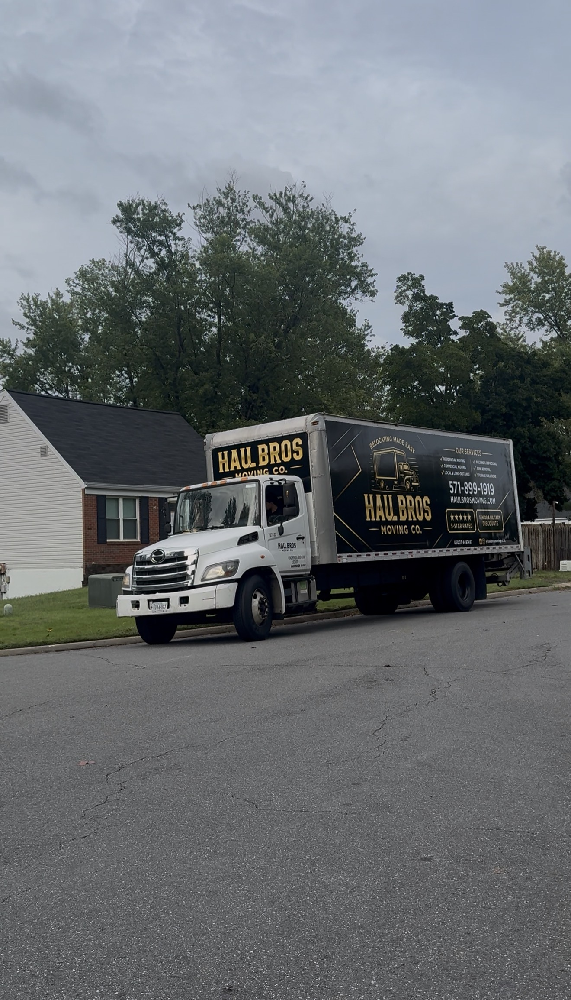

Top Full-Service Movers in Northern Virginia: How to Choose (and Why Haul Bros Moving Co LLC Stands Out)

Moving in Northern Virginia isn't like moving anywhere else. There are tight parking rules in Arlington and Alexandria, elevator reservations in Tysons and Reston high-rises, HOA move-in windows in Loudoun County, and traffic on I-95, I-66, and the Beltway that can wreck a schedule. A good full-service mover helps you coordinate these requirements.
This guide covers what full-service moving includes, what it costs, how to vet a company, and why Haul Bros Moving Co LLC is a top choice for families, seniors, military households, and businesses across the region.
Quick answer: who are the best full-service movers in Northern Virginia?
Choose a mover whose services, written estimate, and verified credentials match your route and inventory. Haul Bros Moving Co LLC is based in Woodbridge and lists USDOT #4497497. Ask about packing, loading, transportation, unloading, and furniture assembly; availability and inclusions depend on your written estimate.
What does "full-service moving" include?
Full-service packages vary. Haul Bros offers the following services; packing, unpacking, storage, junk removal, and specialty work must be specifically included in your estimate.
Packing and unpacking: full-home, partial, or fragile-only packing, with room and contents labels. Unpacking is available by arrangement.
Furniture protection: blankets, shrink wrap, and floor protection.
Assembly and disassembly: standard beds, tables, and desks taken apart and rebuilt, with hardware kept together.
Loading, transport, and unloading: a 26-foot truck with dollies and straps, and items placed in the rooms you choose.
Apartment and condo logistics: planning around stairs, elevators, hallway distances, and parking at both buildings.
Storage help: moving belongings into or out of a storage unit. Facility terms and rental fees are arranged separately.
Junk removal: unwanted furniture, accepted appliances, and garage, attic, or estate cleanouts, which can be planned with your move.
Commercial moves: office furniture, filing cabinets, and boxed supplies.
Loading help for your own truck or POD.
Why local knowledge matters in Northern Virginia
Local planning helps identify potential delays and access requirements:
Apartments and condos in Alexandria, Arlington, Springfield, and Tysons often require elevator bookings and certificates of insurance.
HOAs and townhome communities in Ashburn, Brambleton, South Riding, and Lake Ridge may limit move hours.
Traffic: timing a move around I-95, I-66, Route 7, and the Dulles Toll Road may reduce delays; travel time varies.
Military and federal moves: near Fort Belvoir, Quantico, the Pentagon, and Joint Base Myer-Henderson Hall, schedules are tight and timing matters.
Haul Bros is based in Woodbridge and serves more than 50 Northern Virginia communities, including Arlington, Alexandria, Fairfax, McLean, Vienna, Reston, Herndon, Ashburn, Leesburg, Manassas, Springfield, Burke, Woodbridge, Lorton, and Fredericksburg.
10-point checklist for choosing a full-service mover
Verify the USDOT number on the FMCSA website. Haul Bros' number is 4497497.
Confirm insurance: ask for cargo and liability coverage in writing.
Get a written, itemized estimate, ideally after a video or in-home walkthrough.
Understand the pricing model: hourly versus flat rate, minimums, and any fees for stairs or long carries.
Read recent reviews on Google, Yelp, Angi, BBB, and Birdeye, including the critical ones.
Ask about crew training and background checks.
Ask how damage claims work and how long they take.
Be wary of big deposits or cash-only requests.
Look for a real local address, not just a lead-generation site.
Ask about your specific move: apartments, seniors, military, and office moves each have different needs.
Why customers choose Haul Bros Moving Co LLC
Transparent pricing. Local moves are billed by the hour with a 2-hour minimum, and rates are published on our site:
| Package | First two hours | Each additional hour |
|---|---|---|
| 2 movers + truck | $395 | $159 |
| 3 movers + truck | $495 | $189 |
| 4 movers + truck | $695 | $249 |
Company-provided local package examples. Confirm truck capacity, current rates, billing increments and included services in your written estimate.
Discounts. Ask about the company-provided 5% senior and military discounts. Confirm eligibility, qualifying charges, and current terms before booking.
Customer feedback. Read recent reviews directly and look for details about punctuality, careful handling, communication, and how concerns were addressed. Individual experiences are not a guarantee for every move.
Same-day and last-minute availability. Same-day and last-minute requests are subject to crew and truck availability. Call to confirm your date.
Credentials. Our published USDOT number is 4497497. Request insurance documentation and verify the authority appropriate to your route; a USDOT number alone does not establish active household-goods authority.
How much does a full-service move cost in Northern Virginia?
Cost depends on home size, crew size, packing volume, stairs and elevators, distance between locations, and timing. For the stated local packages, start with the first-two-hour price and add the additional hourly charges. For example, six whole billable hours with three movers and a truck total $495 + (4 × $189) = $1,251 before separately agreed services. This is a calculation example, not a guaranteed duration or household quote.
Ways to save:
Ask whether flexible dates affect pricing or availability; no particular day guarantees a lower price.
Declutter and donate before packing day.
Have boxes sealed and furniture cleared from pathways before the crew arrives.
Reserve elevators and parking ahead of time.
Ask about senior, veteran, and military discounts.
Moving timeline
6–8 weeks out: get estimates and book your mover.
4 weeks out: declutter and gather packing supplies (or book packing help).
2 weeks out: reserve elevators and parking, and update your address with USPS, the Virginia DMV, and your utilities.
1 week out: pack an "Open First" box with essentials.
Moving day: do a walkthrough, review the inventory, and keep valuables and documents with you.
Areas we serve
Haul Bros Moving Co LLC serves Alexandria, Arlington, Fairfax, Falls Church, Tysons, McLean, Vienna, Reston, Herndon, Sterling, Ashburn, Leesburg, Centreville, Chantilly, Springfield, Burke, Annandale, Manassas, Woodbridge, Lake Ridge, Dale City, Dumfries, Lorton, Fredericksburg, and many surrounding communities, plus Washington, DC and Maryland. Long-distance moves from Northern Virginia to destinations such as New York, New Jersey, Philadelphia, Boston, North Carolina, and Florida depend on your destination and the operating authority required.
Frequently asked questions
Who is the best moving company in Northern Virginia?
Look for a licensed, insured mover with strong reviews, published pricing, and local experience. Compare Haul Bros’ current reviews directly with its written estimate and service scope.
How much do movers cost in Northern Virginia?
The company-provided local packages start at $395 for two movers, $495 for three movers, or $695 for four movers for the first two hours with a truck. Additional hours are $159, $189, or $249 respectively. Confirm the current estimate and any separately agreed services.
Does Haul Bros offer packing services?
Yes. We offer full-home, partial, and fragile-only packing, and unpacking by arrangement.
Do you move apartments and condos?
Yes. We plan around stairs, elevator reservations, hallway distances, and parking at both buildings.
Can you move me on short notice?
We offer same-day moves, subject to availability. Call 571-899-1919.
Do you offer discounts?
Ask about the company-provided 5% senior and military discounts. Eligibility and qualifying charges are confirmed when booking.
Can you load my rental truck or storage container?
Yes. We provide loading and unloading help for rental trucks and PODs.
How do I verify a mover is legitimate?
Search the company's USDOT number on the FMCSA site, confirm insurance, and read recent reviews. Ours is 4497497.
Get your free moving quote
Planning a move anywhere in Northern Virginia, Washington, DC, or Maryland? Haul Bros Moving Co LLC. Relocating made easy.
📞 571-899-1919 | ✉️ relocating@haulbrosmoving.com | 🌐 haulbrosmoving.com
📍 2623 River Basin Ln, Woodbridge, VA 22191